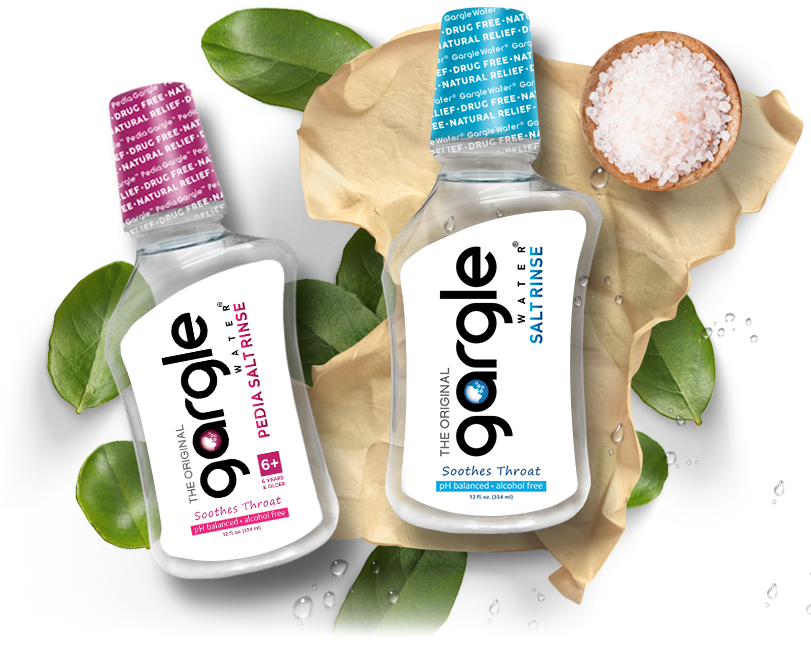

The Original Gargle Water®
Most Effective Salt Water Gargle for Dry, Irritated Throat

Original shark from Sharktank
Gargling with salt water is the most effective, drug-free solution available to soothe the throat. You’ll get instant relief with physician developed, 100% safe Gargle Water® Salt Rinse. Discover the natural power of gargling with salt water today and help keep your family feeling healthy all year round!
ORDER NOWOriginal shark from Sharktank